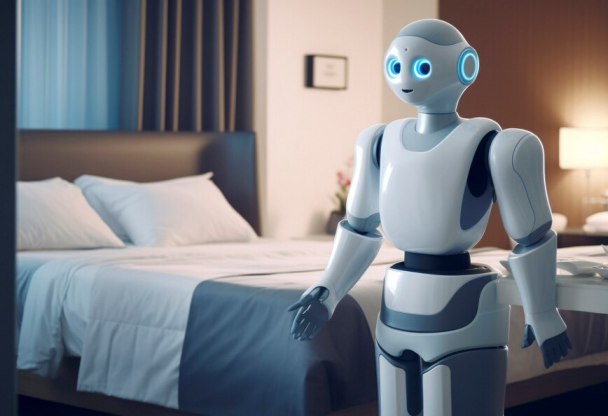
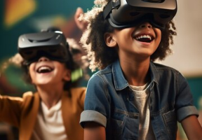

Robótica
Robôs domésticos começam a ser adotados para tarefas diárias,
prometendo mais conforto e eficiência nas residências.
Hologramas
Novo Smartphone Projetor 3D chega ao mercado,
transformando a forma como vemos nossas telas!
Internet
Tecnologia 6G chega às metrópoles brasileiras, prometendo
revolucionar a forma como vivemos e nos comuni....
 Vestíveis
Vestíveis
Empresa lança relógio inteligente capaz de monitorar a saúde mental,
oferecendo insights valiosos para o...

Realidade Virtual
Escolas adotam a tecnologia VR para proporcionar experiências
imersivas, transformando a aprendizagem trad...